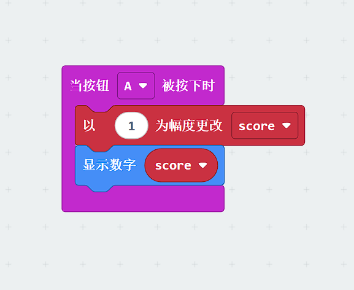

Task 1
In the on start block, it only displayed the score once,and when button A is pressed, it only updated the score without updating the display again.
We remove the basic.showNumber(score) from the on start block, or leave it but the key is to refresh the display after pressing A.This way, every time you press button A, the updated score will be shown immediately.
Share a screenshot of the solution:
Task 2
Its current code turns pin P1 “on” when it’s dark, but there’s no logic to turn it off when it’s bright again — so once it’s turned on, it stays on forever.
We continuously check the light level, and turn P1 ON when it’s dark, and OFF when it’s bright. That means using a loop to keep checking.
Share a screenshot of the solution:
Task 3
The Math.randomRange(1, 10) which is correct, but the comparison might not be happening as expected, or it is not getting clear feedback unless it’s a win.Also, randomness can feel harder than it is if the feedback loop is unclear.
Always show the guessed number, so the player knows what’s happening.Make the win feedback clearer. Test if the range includes 5 properly.
Share a screenshot of the solution: